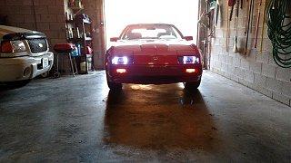
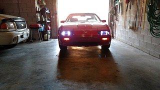

-
Just checking in also. Still have my 86NA and drive it frequently.1978 280Z - great fun!
1981 280ZX - more fun!!
1986 300ZX NA2T - Lots of fun! -
I still check in, Still have my 85 Z31T, my 93 Z32NA, my 15 Xterra Pro-4X and my 19 Crosstrek. Moved to central Florida a year ago, bought a house. Just had a hip replacement in August, still can't walk right. Retiring in 12 more working days, can't wait, counting the days I can start working on my cars again.Restore it, Don't crush it. They don't make them like this anymore.
Scott
85 Turbo, original owner, restored
93 NA Babied

-
Congrats on the retirement, I am ready now but stock market etc and new job this August I am shooting for 2026 to call it a day. I have 84' 300ZX, 2005 XTerra S 4x4, 2016 Mercedes 550e S Class and 2021 Leaf SL Plus (wifes driver) -
I try to remember to check in to this site once in a whie to see if anything's up. I'm still a few years away from retirement by choice. FlyingT I hope that hip job went OK for you - I had BI-Lateral in 2011 and all is well.1978 280Z - great fun!
1981 280ZX - more fun!!
1986 300ZX NA2T - Lots of fun! -
I never really posted on this forum but always lurked. If you guys are in the z31 drivers group on FB you guys probably have seen me. I have a black 84T from cali. My name is Matt aka Knine -
Z31.com old head checking in. I swing by every now and again but never post anymore. Still have a ton of Z cars at least. A mix of z31s and z32s. Z31p is not like It was back then that's for sure. Facebook has made me and many others lazy in that regard.
My signature is wack. And all those vehicles are long gone lolLast edited by NicelowZ86NA2T; 03-31-2023, 06:23 AM.98 Maxima SE 5-speed. Daily
07.5 Silverado Duramax. 650whp. Weekend Sled Puller. It just never ends.
86/88 Turbo Project.
90TT. GT675RS turbos, 3" exhaust, 740cc Nismo injectors, Wiseco Forged Pistons, and much more!! 574whp on 25psi on 93. Gone! -
Buried in snow here … I keep my hoods up … The mice don't like being exposed … Plus side it seems z31's are going up in value … mainly because so many have been crushed … I had a squirrel drop a 5lb pinecone on a right front fender . Any thoughts on pulling the fender ? Pro only ? . -
Two years are up! Where is the EV conversion!Originally posted by Z_Karma View Post
-
shit,,,Originally posted by JSM View Post
lol, the month after my kids were out of school… I got a new gf and have been doing couples stuff. and other vehicular distractions.
I'm staying stuck-in on more attainable goals for the Z cars that i can do in the limited space i have available.
I have new Recaro seat upholstery being made by MCA upholstery for both Shiros, and new carpet kits from Stock Interiors to match. as well as 2 new hybrid turbos from AGP
I am keeping an eye on the Youtube channel B is for Build and his acquirement of 4 wrecked Teslas in preparation for a potential EV conversion.
Alas, the AE has still sat in storage. I got a warning from the property management about working on cars in the storage complex, so i had to cease and desist wrenching there.

84 AE/Shiro #683/Shiro #820/84 Turbo -
I'm with you! I think I need to convert mine into a Z31 coffin! I had both up forsale asking high $$$, but no real takers. Granted, both projects. I just need to finsih one and part the other one.Originally posted by Z_Karma View Post -
still in det swap process, still driving ET.
new GF, new DD (r50 vg33), 3 places of job changed, extra job as internet store car parts manager.
analog to digital swap done, etc. -
Still out I think they may be done
-
Hi everyone! just passing thru while thinking about getting my z31 out for a spin.. 
1978 280Z - great fun!

1978 280Z - great fun!
1981 280ZX - more fun!!
1986 300ZX NA2T - Lots of fun! -
I still pop in from time to time, but am busy as crap. Between working on the Taurus and Corolla, I can't seem to get to the Z. I did get new carpet and seat covers in. Still need to finish a little body work on the front/rear facias as well as the center mudguards. and pop in the windshield. and finish rebuilding the brakes. and replace the suspension bushings. then.... cruise.
anyone know a source for a shift knob that will thread? Mine's missing the shift pattern placard.--------------
Legal stuff:
**Nissan Employee**
Any information shared is simply my own opinion and NOT the opinion of Nissan
not legal stuff:
'88 300ZX 2+2-- driving… just details left
'22 Q60RS-- I tell the wife it's hers…
'87 Chaparral bowrider-- the next project
'00 Corolla-- kids car.
'14 E-350-- Gotta haul those kids in something. -
Back in Arizona, going to be working on the Z31 soon! She got a little rough sitting over the last 3 or so years, and I'm pretty sure the mice have made a rather large nest in the engine bay. Only peeked and havent fully opened the hood yet (scared and a little upset about it). Going to document the slicktop's second restoration more effeciently and the goodies will be available Patreon, as well as updates here and on my newly established project website. I don't want to be the cliche (Hey guys subscribe and buy my merch.) I'd rather let you decide for yourself based off the presentations I give. The slicktop is not the only project I'll be featuring on my project sites. Some projects haven't been announced yet, but planning on doing this one step at a time. Don't want to get too many things going at once, I'm new to this content creation thing.
I'm -probably- going to do a reveal video of the slicktop which will feature me opening up the hood and getting a first look at the engine bay carnage as well as doing a walk around of the car and fully identifying the project needs.
Website: https://codeusa.000webhostapp.com <--- look in the Project News section and scroll down past the first article for an article on the slicktop
Patreon: https://patreon.com/codeusa
More pics (over 2MB): https://codeusa.000webhostapp.com/Z31/
Pic8.jpg
(PS: While I'm a little upset about the condition of the car I have no one to blame by myself for leaving it behind for 3 years. Should make an interesting project! Also, not -too- worried about mouse damage as I'll be switching to stand-alone engine control. Probably megasquirt but I've seen some people on YouTube use Holly EFI stuff and I really like the options and capabilities I've seen of that system, but looking over the Holley website I don't see anything for V6 options.


Copyright © 2006–. All rights reserved. Privacy Policy
Comment